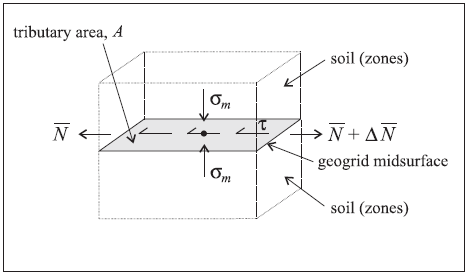
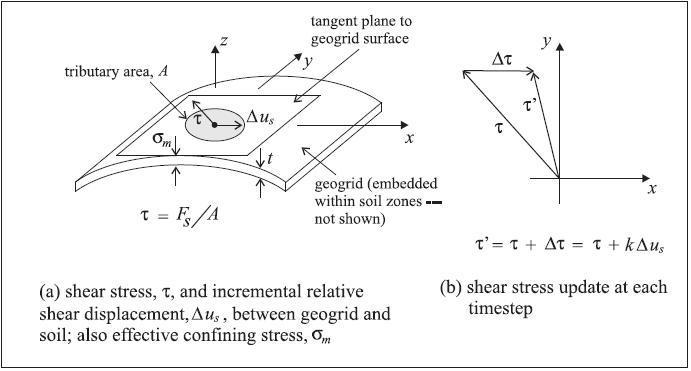
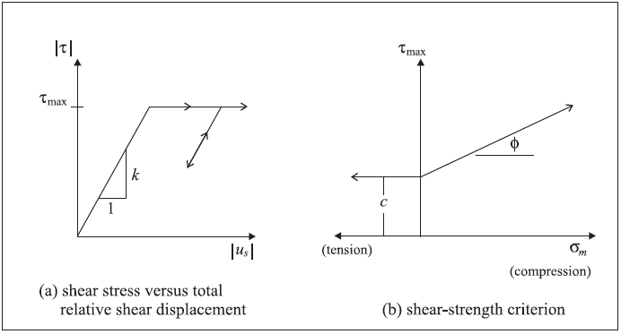

土工格栅结构单元
注意壳结构单元基于 壳类结构单元（Shell-Type Structural Element），共享其底层表述与实现。
力学行为
各土工格栅单元的力学行为可分为土工格栅材料本身的结构响应（见 壳类力学行为（Shell-Type Mechanical Behavior））以及土工格栅单元与模型网格的相互作用方式。默认情况下土工格栅单元被赋予 CST 平面应力单元，它承受膜作用但不承受弯曲荷载（见 壳有限单元（Shell Finite Elements））。膜结构可建模为土工格栅单元的集合。土工格栅表现为各向同性或正交各向异性的线弹性材料，无破坏限值。土工格栅与模型网格之间发生沿剪切方向（土工格栅表面切平面内）的摩擦作用，且土工格栅在法向从属于网格运动。可把土工格栅视为一维锚索的二维类比。土工格栅用于模拟与土体剪切作用重要的柔性膜，如土工布与土工格栅。
土工格栅单元所用全部节点的节点局部系方位在一组循环开始时（或执行 执行计算时步（model cycle） 0 命令时）自动设定，使 \(z\) 轴与使用该节点的所有土工格栅单元的平均法向对齐，\(xy\) 轴在土工格栅切平面内任意取向（见 图 2（Figure 2））。
土工格栅嵌于模型网格内部。土工格栅-土体界面的行为汇总于 图 1（Figures 1） 至 2。作用于土工格栅上的应力示于 图 1（Figure 1）。这些应力由有效围压 \(\sigma_m\) 与总剪应力 \(\tau\) 组成，由土工格栅本身发展的膜应力平衡。这些膜应力合力（见 壳中的应力（Stresses in Shells））在 图 1（Figure 1） 中记为 \(\bar N\)。界面行为在每个土工格栅节点处以法向刚性附着与土工格栅表面切平面内的弹簧-滑块表示。弹簧-滑块的方位随土工格栅与宿主介质之间的相对剪切位移 \({\bf u}_s\) 变化，如 图 2（Figure 2） 所示。每个节点只有单个弹簧滑块，这使土工格栅的行为类似于粗网格的交叉杆件。弹簧-滑块承担土工格栅表面两侧 tributary 面积上的总剪力。此外假定有效围压等量作用于土工格栅表面两侧。

图 1：作用于某节点周围土工格栅单元上的应力


图 2：土工格栅节点处界面行为的理想化
土工格栅-土体界面的法向行为如下所述。土工格栅-土体界面的剪切行为（见 图 3（Figure 3））兼具黏聚与摩擦性质，由以下耦合弹簧性质控制：(1) 单位面积刚度 \(k\)；(2) 黏聚强度 \(c\)；(3) 摩擦角 \(\phi\)；(4) 有效围压 \(\sigma_m\)。注意各土工格栅单元对应的耦合弹簧性质在土工格栅节点处取平均。
有效围压 \(\sigma_m\) 垂直于土工格栅表面作用，在每个土工格栅节点处依据该节点所连单个网格单元中的应力计算。记土工格栅表面法向为 \(z\)。\(\sigma_m\) 的取值取为
其中： \(p\) = 孔隙压力


图 3：土工格栅单元的剪切向界面行为
计算土工格栅-土体界面相对位移时，采用插值方案依据节点所连网格单元内的位移场计算网格位移。插值方案的权重因子由到各网格点的距离确定。同一插值方案也用于把土工格栅-土体界面发展的力反向施加到该网格单元的网格点上。
如上所述，在每个土工格栅节点处对网格速度作出插值估计。垂直于土工格栅表面的速度被直接传递给节点（即土工格栅节点在法向从属于网格运动）。若共享该节点的所有土工格栅单元共面，则节点对网格不施加法向力；但若它们不共面，则其膜力的一部分将在法向起作用。该净力同时作用于网格与土工格栅节点（方向相反）。因此初始为平面的土工格栅若允许有限挠度，用大应变求解模式即可承受法向荷载。该法向力被传递给节点所附着的单个网格单元的网格点。附着只连到土工格栅表面一侧的一个网格单元，而该侧未必对应受压侧。没有提供土工格栅与土体之间间隙形成或跟踪的机制（即假定土工格栅始终完全嵌于土体中）。
土工格栅支持大应变滑动（把 slide 性质设为 开启（on）），此时在大应变模式下运行时，插值位置（土工格栅节点用于与网格单元之间传递力与速度——见 结构单元连接（Structural Element Links））将随网格迁移。这可计算土工格栅的大应变破坏后行为，此时土工格栅节点与网格单元之间发生显著滑动。若某土工格栅节点移出所有网格单元，则即便该节点后来又移回网格单元内，也不会重建与网格单元的连接；不过在土工格栅节点于网格单元之间滑动期间，该连接保持完好。
响应量
土工格栅的响应包括格栅本身的应力，以及剪切耦合弹簧中的应力、位移与屈服状态。附加耦合弹簧信息包括当前加载方向与有效围压。土工格栅的响应可通过 FISH 访问，并
- 用
structure geogrid list命令打印， - 用
structure geogrid history命令监测，以及 - 用 Geogrid 绘图项绘制。
关于支持恢复土工格栅本身应力的命令汇总，见 壳类响应量（Shell-Type Response Quantities）。
属性
每个土工格栅单元除 壳类性质（Shell-Type Properties） 所述所有壳类单元共有的性质外，还有 5 个性质。这些性质控制土工格栅-土体界面的剪切行为。
- coupling-cohesion-shear，耦合弹簧黏聚力（应力单位），\(c\) [F/L2]
- coupling-friction-shear，耦合弹簧摩擦角，\(\phi\) [度]
- copling-stiffness-shear，单位面积耦合弹簧刚度，\(k\) [F/L3]
- slide，大应变滑动标志（默认：关闭（off））
- slide-tolerance，大应变滑动容差
Commands & FISH
| 这些内容对您有帮助吗？… | FLAC3D © 2019, Itasca | 原文更新于 2020 年 10 月 8 日 |